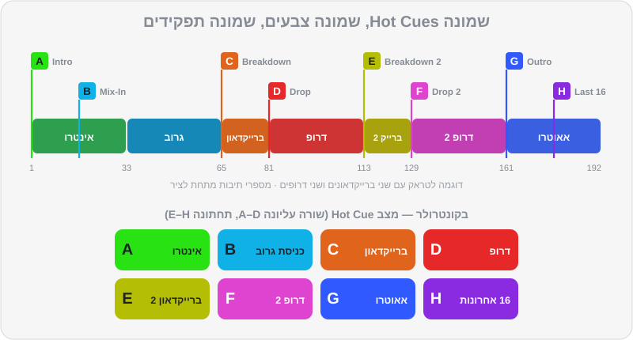

פרק 07 מתוך 15
Hot Cues, לופים ו-Beat Jump
Hot Cues, Loops & Beat Jump
ההבדל בין CUE, Memory Cue ו-Hot Cue, מוסכמת הצבעים A–H של DJ Lab, לופים ידניים ואוטומטיים, Beat Jump לתיקון פרייזים, Slip ו-Quantize, מצבי הפדים — ושגרת הכנה של חמש דקות לכל טראק.
תחשבו על Hot Cues כמו על סימניות בספר — רק שלחיצה על הסימנייה מקפיצה אתכם לעמוד הנכון ומתחילה להקריא ממנו, מיד, בדיוק בקצב. DJ שהכין Hot Cues לא מחפש בזמן אמת "איפה מתחיל האאוטרו?" — הוא יודע: זה הכפתור הכחול. לופים הם הכלי השני שמשנה את כל המשחק: הם מאריכים, מקצרים, קונים זמן ובונים מתח. יחד עם Beat Jump ו-Quantize, הם הופכים כל טראק לחומר גלם גמיש. בפרק הזה נלמד את כל הכלים האלה, ונבנה שגרת הכנה שתהפוך כל טראק חדש לטראק "מוכן לבמה" בתוך חמש דקות.
מה תלמדו בפרק#
- ההבדל בין כפתור CUE, Memory Cue ו-Hot Cue
- מוסכמת ה-Hot Cues של DJ Lab — שמונה סלוטים, שמונה צבעים, שמונה תפקידים
- איך יוצרים, צובעים, נותנים שם ומוחקים Hot Cues ב-Rekordbox
- לופים: ידניים, Auto Beat Loop, הכפלה וחציה, ושמירת לופים
- Beat Jump: לתקן פרייז, לדלג על קטע, לקצר או להאריך
- Slip ו-Quantize — שתי "רשתות ביטחון"
- מצבי הפדים בקונטרולר
- שגרת הכנה מלאה לטראק — כולל מיינסטרים וים-תיכוני
שלושה סוגי Cues#
| כפתור CUE | Memory Cue | Hot Cue | |
|---|---|---|---|
| כמה | אחד (זמני) | עד 10 לטראק (כולל לופים) | 8 (A–H) במצב Export ובנגני CDJ; עד 16 במצב Performance |
| מה קורה בלחיצה | חוזר לנקודה ועוצר | מקפיץ לנקודה ועוצר — צריך ללחוץ Play | מקפיץ ומנגן מיד |
| נשמר? | לא, רק בזמן הטעינה | כן, עם הטראק | כן, עם הטראק |
| הכי שימושי ל... | הכנת השיר הבא באוזניות | סימני דרך על הווייבפורם, בעיקר ב-CDJ | ניווט מהיר והופעה חיה |
כפתור ה-CUE (בסגנון CDJ)#
- השיר עצור: לחיצה על CUE קובעת נקודת Cue במקום הנוכחי.
- השיר מתנגן: לחיצה על CUE מחזירה לנקודה ועוצרת.
- החזקה כשעומדים על הנקודה: השיר מתנגן כל עוד מחזיקים, ובשחרור חוזר לנקודה. מעולה כדי "להציץ" ולבדוק שה-1 במקום.
Memory Cues#
סימני דרך שנשמרים עם הטראק ומופיעים על הווייבפורם. בנגני CDJ הם בולטים במיוחד: על המסך רואים כמה ביטים נשארו עד ה-Memory Cue הבא — עזרה מעולה לספירה. בטראקים של DJ Lab, ה-Memory Cues מסמנים נקודות כמו הברייקדאון.
Hot Cues#
הכלי הכי חשוב בפרק. Hot Cue הוא כפתור (פד) שמקפיץ לנקודה ומנגן מיד. אם Quantize דולק, הקפיצה "נצמדת" לביט — כך שאפשר ללחוץ באמצע שיר מתנגן, והשיר ממשיך בקצב בלי לפספס.
מוסכמת ה-Hot Cues של DJ Lab#
כל הטראקים ברפו מגיעים עם Hot Cues לפי אותה שיטה. אנחנו ממליצים לאמץ אותה גם לטראקים שתקנו — עקביות היא מה שמאפשר לנגן בלי לחשוב.
| סלוט | שם | צבע | קוד צבע | איפה | למה |
|---|---|---|---|---|---|
| A | Intro | 🟢 ירוק | #28E214 |
הביט הראשון (ה-1 של תיבה 1) | נקודת הכניסה של השיר |
| B | Mix-In / Groove | 🔵 תכלת | #10B1E6 |
התיבה שבה הבאס או הגרוב המלא נכנסים | נקודת כניסה "מלאה" או יעד ל-Bass Swap |
| C | Breakdown | 🟠 כתום | #E0641B |
הברייקדאון הראשון | לדעת מתי מגיעה "נשימה" |
| D | Drop | 🔴 אדום | #E62828 |
הדרופ / ההוק הראשי | קאטים, החלפת דרופים |
| E | Breakdown 2 | 🟡 צהוב | #B4BE04 |
ברייקדאון שני (אם יש) | |
| F | Drop 2 | ורוד | #DE44CF |
דרופ שני (אם יש) | |
| G | Outro | 🔷 כחול | #305AFF |
תחילת האאוטרו | נקודת היציאה — כאן מתחיל המעבר |
| H | Last 16 | 🟣 סגול | #8A2BE2 |
16 תיבות לפני הסוף | אזהרה אחרונה / לופ חירום |

ההיגיון: ירוק = התחלה, כחול = יציאה, אדום = שיא. אחרי שבוע של עבודה עם השיטה, העיניים כבר יודעות לבד איפה כל דבר.
יצירה, צבע ושם ב-Rekordbox#
Cues אוטומטיים#
גרסאות Rekordbox 7 כוללות כלים ליצירה אוטומטית של Cues, בין השאר על בסיס ניתוח הפרייזים (ובגרסאות האחרונות נוספו גם יכולות של Cues "חכמים"). שווה לנסות — זה חוסך זמן בספרייה גדולה. אבל אל תסמכו בעיוורון: עברו על כל טראק, הקשיבו לכל Cue, ותקנו לפי המוסכמה שלכם.
לופים#
לופ חוזר על קטע קצר שוב ושוב, בלי הפסקה. בגלל שהוא מחובר לרשת, הוא נשאר בקצב.
סוגי לופים#
- לופ ידני: LOOP IN בתחילת הקטע, LOOP OUT בסופו. EXIT / RELOOP — יציאה מהלופ או חזרה אליו.
- Auto Beat Loop: לחיצה אחת יוצרת לופ באורך קבוע (למשל 4 ביטים) מהמקום הנוכחי. כפתורי ×2 ו-½ מכפילים או חוצים את האורך תוך כדי.
- Beat Loop בפדים: כל פד הוא אורך אחר — לחיצה מפעילה, לחיצה נוספת מכבה.
- לופ שמור: אפשר לשמור לופ כ-Memory Cue או כ-Hot Cue, ולהפעיל אותו בלחיצה.
אורכי לופ — בביטים, בתיבות ובשניות#
| ביטים | תיבות | ב-124 BPM | שימוש טיפוסי |
|---|---|---|---|
| 1/4 – 1/2 | — | פחות מרבע שנייה | Loop Roll, אפקט "טררר" |
| 1 | רבע תיבה | 0.48 שנ' | Loop Roll, מתח לפני דרופ |
| 4 | 1 | 1.9 שנ' | "גמגום", בילדאפ קצר |
| 16 | 4 | 7.7 שנ' | הארכת אינטרו/אאוטרו, החזקת גרוב |
| 32 | 8 | 15.5 שנ' | לופ "בטוח" — פרייז שלם |
| 64 | 16 | 31 שנ' | הארכה ארוכה של קטע תופים |
מה עושים עם לופים#
- הארכת אינטרו או אאוטרו — כשהשיר קצר מדי למעבר שתכננתם. קריטי בפופ, בהיפ-הופ ובמזרחית, שבהם האינטרו הוא לפעמים 4 תיבות.
- קניית זמן — הטלפון צלצל, מישהו ביקש שיר, ה-USB נתקע: לופ של 8 תיבות על קטע תופים, נשימה, ממשיכים.
- בניית מתח — Loop Roll שהולך ומתקצר לפני דרופ (פרק 6).
- רימיקס חי — להשאיר גרוב בלופ ולשלב מעליו אלמנטים משיר אחר.
Beat Jump#
Beat Jump מקפיץ את השיר קדימה או אחורה במספר ביטים קבוע — 1, 2, 4, 8, 16, 32 ועוד — בלי לצאת מהקצב. הוא נשען על הרשת, ולכן עובד מושלם כש-Quantize דולק וה-Grid נכון.
שלושה שימושים שמצילים מעברים#
- תיקון פרייזים. התחלתם את B, והקצב מסונכרן, אבל השינויים ב-B מגיעים 4 תיבות אחרי השינויים ב-A? קפיצה של 16 ביטים (4 תיבות) קדימה ב-B, והפרייזים מיושרים. בלי לעצור, בלי שהרחבה תשמע.
- דילוג על קטע. ברייקדאון ארוך מדי לרגע הנוכחי ברחבה? קפיצה של 32 או 64 ביטים קדימה, על ה-1, ואתם קרובים לדרופ.
- הארכה. רוצים עוד 8 תיבות של גרוב לפני שהשיר נגמר? קפיצה של 32 ביטים אחורה, על ה-1.
Slip ו-Quantize — רשתות הביטחון#
Slip#
כש-Slip דולק, השיר ממשיך "לרוץ בשקט" מתחת לכל מה שאתם עושים: לופ, סקרץ', Reverse או החזקת Hot Cue. ברגע שאתם משחררים, הנגינה חוזרת למקום שבו השיר היה אמור להיות — כאילו לא נגעתם.
- Loop Roll + Slip: "גמגום" של כמה ביטים, וכשמשחררים — השיר ממשיך בדיוק בפרייז שלו.
- Reverse + Slip (צנזורה): מילה גסה בשיר באירוע? Reverse לשנייה, משחררים, והשיר ממשיך בדיוק בקצב. שימושי מאוד בחתונות ובאירועי חברה.
Quantize#
Quantize "מצמיד" כל פעולה לרשת: הפעלת Hot Cue, התחלת לופ, Beat Jump. גם אם לחצתם 50 אלפיות מוקדם, הפעולה תקרה בדיוק על הביט.
- השאירו אותו דולק כמעט תמיד.
- כבו אותו כשה-Grid של טראק שגוי (ואין זמן לתקן), או כשאתם רוצים Cue שלא נמצא על ביט — למשל ווקאל שמתחיל "רגע לפני ה-1" (Pickup), כמו "יאללה!" שבא חצי ביט לפני הדרופ.
- אפשר לקבוע בהגדרות את רזולוציית ה-Quantize (ביט שלם או חלקי ביט).
מצבי הפדים#
לרוב הקונטרולרים יש שורה של 8 פדים לכל דק, שמשנים תפקיד לפי מצב. ב-DDJ-FLX4, למשל:
| מצב | מה הפדים עושים | חשיבות למתחילים |
|---|---|---|
| Hot Cue | הפעלה ושמירה של Hot Cues A–H | ⭐⭐⭐ — המצב שבו תהיו 80% מהזמן |
| Pad FX | אפקטים "ברגע": Echo, Reverb, Roll, Echo Out ועוד | ⭐⭐ — כולל Echo Out מפרק 6 |
| Beat Jump | קפיצות קבועות קדימה/אחורה | ⭐⭐⭐ — תיקון פרייזים |
| Sampler | הפעלת סאמפלים (הורנים, אפקטים קוליים) | ⭐ — במידה |
| Beat Loop (עם SHIFT) | לופ באורך קבוע לכל פד | ⭐⭐ |
| Keyboard (עם SHIFT) | מנגן Hot Cue בגבהים שונים | ⭐ — לשלב מתקדם |
| Key Shift (עם SHIFT) | משנה את הסולם של השיר | ⭐ — פרק 10 |
שגרת הכנה של חמש דקות לטראק#
זה מה שמקצוענים עושים לכל טראק חדש, בבית, לפני שהוא נכנס לסט:
- Beatgrid — בדיקה בהתחלה, באמצע ובסוף (פרק 2).
- A — על ה-1 הראשון של השיר (אחרי פתיחה חופשית או Pickup, אם יש).
- B — איפה שהבאס או הגרוב המלא נכנסים.
- C ו-D — הברייקדאון הראשון והדרופ הראשון.
- E ו-F — אם יש ברייקדאון ודרופ שניים.
- G — תחילת האאוטרו, על גבול פרייז.
- H — 16 תיבות לפני הסוף (בקפיצת Beat Jump של 64 ביטים אחורה מהסוף, זה קל).
- Memory Cues — לפחות על C, D ו-G, כדי שיופיעו כסימני דרך גם בנגני CDJ.
- צבע טראק, דירוג ותגיות — פרק 9.
- נעילת ניתוח, כדי שהעבודה לא תימחק.
מיינסטרים, היפ-הופ וים-תיכוני#
בשירים בלי מבנה "של DJ", המוסכמה מתגמשת:
- A — ה-1 הראשון, גם אם יש לפניו פתיחה חופשית (תקסים של עוד או כינור). את הפתיחה עצמה סמנו ב-Memory Cue נפרד — היא יכולה להיות רגע "וואו" באירוע.
- B — תחילת הבית הראשון, או ה-1 של הגרוב המלא.
- D — הפזמון / ההוק הראשון. זה ה"דרופ" של שיר פופ.
- F — הפזמון האחרון (לפעמים הכי חזק).
- G — תחילת הקטע האחרון שאפשר לצאת ממנו בנוחות.
- Cue פנוי (E או H) — קטע תופים שמתאים ללופ, למקרה שהאאוטרו קצר.
תרגילים#
סיכום#
- CUE = נקודה זמנית. Memory Cue = סימן דרך שעוצר. Hot Cue = קפיצה ונגינה מיידית.
- מוסכמת DJ Lab: A ירוק (התחלה), B תכלת (כניסת גרוב), C כתום, D אדום (דרופ), E צהוב, F ורוד, G כחול (יציאה), H סגול (16 אחרונות).
- לופים רק על קטעים פשוטים ועל ה-1. 16 ביטים = 4 תיבות, 32 ביטים = פרייז.
- Beat Jump מתקן פרייזים, מדלג על קטעים ומאריך — בלי לצאת מהקצב.
- Slip מחזיר אתכם למקום שבו השיר "היה אמור להיות". Quantize מצמיד הכול לרשת.
- שגרת הכנה של חמש דקות לכל טראק — בבית, לא בהופעה.
בפרק הבא#
כל ההכנה הזו נבדקת בסוף באוזניות. בפרק הבא נלמד לעבוד איתן נכון: Cue Mix, טכניקת האוזן האחת, Split Cue, מוניטור Booth, השהיות — ואיך שומרים על השמיעה.